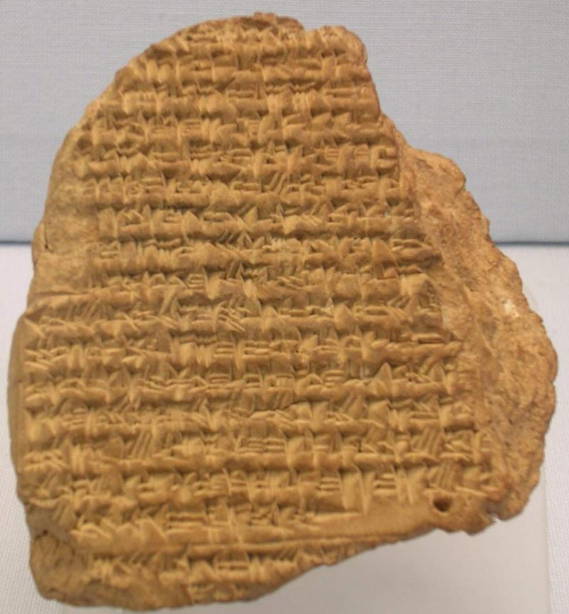
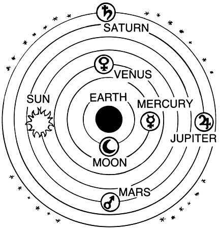
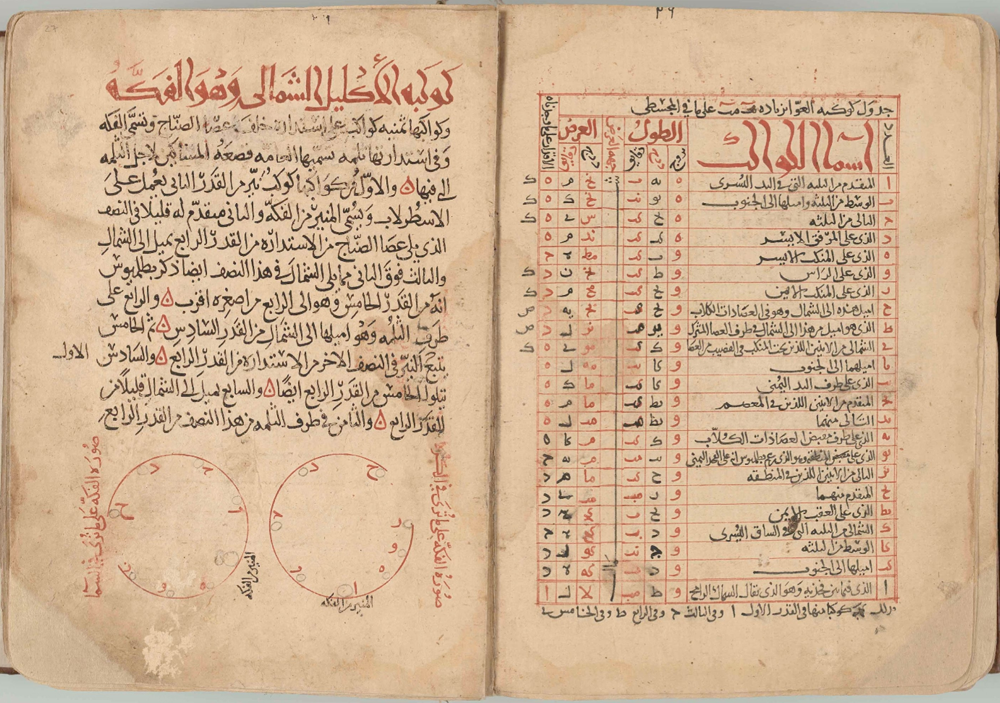
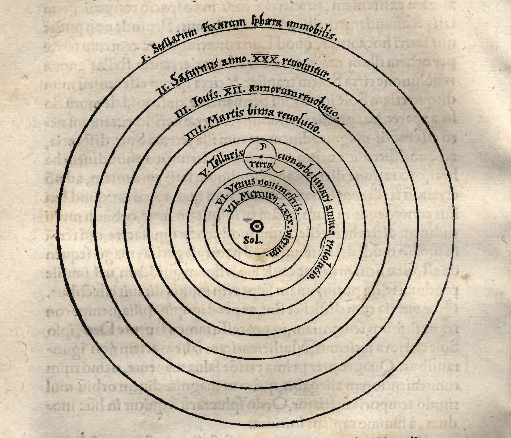
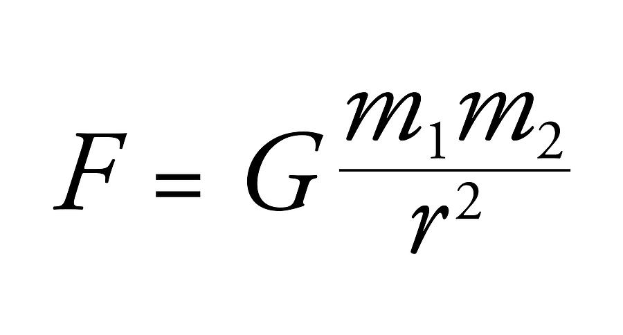
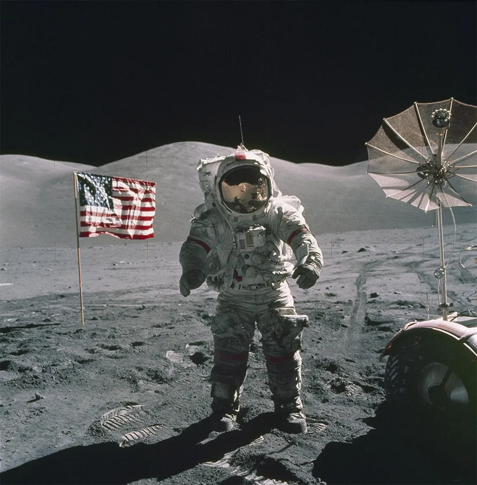
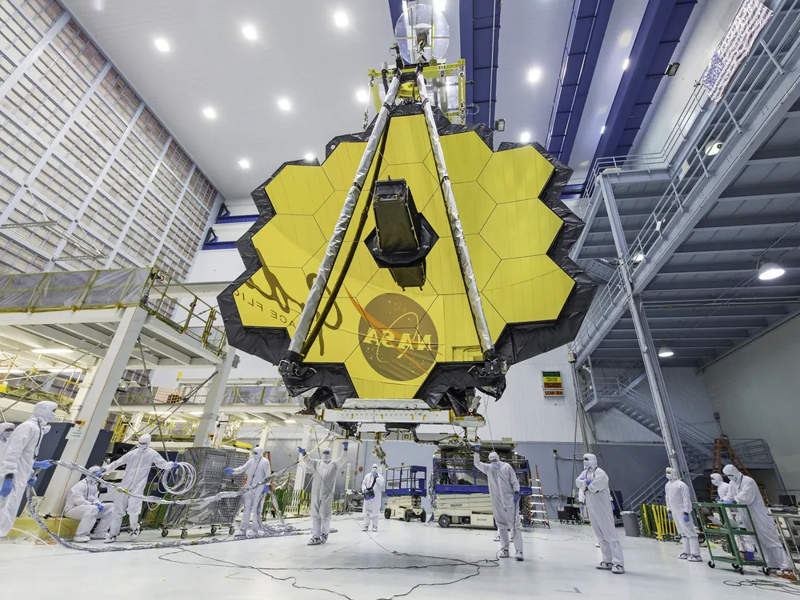

What is astronomy?
Astronomy is the scientific study of celestial objects, space, and the universe. It involves observing and analyzing the physical properties and behaviors of stars, planets, galaxies, and other cosmic phenomena, as well as developing theories to understand the fundamental laws governing the universe. Astronomy extends our observational capabilities through advanced technology and integrates with other scientific disciplines to provide a comprehensive understanding of the cosmos, including aspects that are currently beyond direct perception.
In 1995, the Hubble Space Telescope captured the Hubble Deep Field by observing a seemingly empty patch of sky in the constellation Ursa Major for 10 consecutive days. This observation revealed thousands of distant galaxies, some dating back over 12 billion years, providing a glimpse into the early universe. Analyzing the light from these galaxies allowed astronomers to determine their distance, age, and composition, thus refining theories about galaxy formation and evolution. The Hubble Space Telescope's advanced technology, free from atmospheric distortions, extends our observational capabilities, enabling us to study objects billions of light-years away.
Hubble Space Telescope (cr: Briley Lewis, Medium)
History of Astronomy
Ancient Astronomy
Astronomy's roots trace back to ancient civilizations like the Babylonians, Egyptians, and Chinese, who meticulously observed the skies to create calendars and predict celestial events. For instance, the Babylonians recorded lunar eclipses and developed a lunar calendar around 1000 BCE, which was critical for agricultural planning. Similarly, the Egyptians built the Great Pyramids of Giza aligned with the North Star and the Orion constellation, reflecting their deep astronomical knowledge and its significance in their culture and religion.
Babylonian Calendar
Classical Astronomy
The Greeks made foundational contributions to astronomy, particularly with Claudius Ptolemy's geocentric model described in the Almagest. This model, which placed the Earth at the universe's center, dominated astronomical thought for over a millennium. Aristotle further supported this view with philosophical arguments, while Hipparchus, known for his star catalog and discovery of the precession of the equinoxes, laid the groundwork for future celestial mapping.
Ptolemaic System
Islamic Golden Age
During the Islamic Golden Age, astronomers in the Muslim world preserved and expanded Greek and Roman astronomical knowledge. Al-Battani refined Ptolemy's work, calculating the length of the solar year with remarkable precision, while Al-Sufi’s Book of Fixed Stars updated the star catalog and described the Andromeda Galaxy. These scholars also improved instruments like the astrolabe, essential for navigation and timekeeping. Their meticulous observations and mathematical advancements, such as those by Al-Khwarizmi, played a crucial role in the development of astronomy and were later transmitted to Europe, spurring the Renaissance.
The book of Fixed Stars, Al Suffi
Renaissance Revolution
The Renaissance marked a transformative period in astronomy, highlighted by Nicolaus Copernicus's heliocentric model, detailed in De revolutionibus orbium coelestium. This model, which positioned the Sun at the center of the solar system, challenged the prevailing geocentric views. Galileo Galilei's telescopic discoveries, such as the moons of Jupiter and the phases of Venus, provided strong evidence for Copernicus's theory. Johannes Kepler further advanced this model with his laws of planetary motion, which described the elliptical orbits of planets, significantly refining our understanding of celestial mechanics.
Heliocentric model of Copernicus
Classical Physics
In the 17th century, Isaac Newton's Philosophiæ Naturalis Principia Mathematica introduced the laws of motion and universal gravitation, offering a comprehensive physical explanation for celestial phenomena. Newton’s work showed that the same laws governing motion on Earth applied to celestial bodies, providing a unified framework for understanding the movements of planets and other astronomical objects. His formulation of gravity explained why planets orbit the Sun and how objects interact in space, profoundly influencing both physics and astronomy and laying the foundation for modern science.
Newton's Universal Law of Gravitation
Modern Astronomy
The 19th and 20th centuries witnessed revolutionary advancements in astronomy with the advent of spectroscopy and photography. These tools enabled astronomers to analyze the composition and motion of stars and galaxies. Edwin Hubble’s discovery in 1929, that the universe is expanding, based on the redshift of light from distant galaxies, provided robust support for the Big Bang theory. The space age, heralded by the launch of Sputnik and subsequent manned missions like Apollo 11, allowed direct exploration of space, leading to significant discoveries such as the detailed mapping of the lunar surface and the observation of distant celestial phenomena.
Apollo Mission
Contemporary Astronomy
Today, astronomy is a highly advanced field, utilizing sophisticated telescopes and space probes. The Hubble Space Telescope, launched in 1990, has provided stunning images and invaluable data on distant galaxies, nebulae, and other cosmic phenomena. Discoveries such as the cosmic microwave background radiation have deepened our understanding of the universe's origins. The identification of thousands of exoplanets by missions like Kepler and TESS has expanded our knowledge of planetary systems beyond our own. Contemporary research focuses on understanding dark matter and dark energy, and the ongoing search for extraterrestrial life, exemplified by missions like the Mars rovers and the James Webb Space Telescope, continues to push the boundaries of our knowledge.
James Webb Telescope
Main Topics in Astronomy
Cosmology
Cosmology is the study of the universe as a whole, including its origin, evolution, structure, and eventual fate. It encompasses the Big Bang Theory, the expansion of the universe, the cosmic microwave background radiation, and the distribution of galaxies. Cosmologists explore fundamental questions about the universe's beginning, its large-scale structure, dark matter, dark energy, and the ultimate fate of the cosmos. Theoretical models and observations, such as those from the Hubble Space Telescope and the Planck satellite, are crucial in cosmological research.
Stellar Astronomy
Stellar astronomy focuses on the study of stars, their formation, evolution, and death. This includes understanding the different types of stars, their life cycles from nebulae to main sequence stars, and their end stages, which can result in white dwarfs, neutron stars, or black holes. Key aspects include the Hertzsprung-Russell diagram, stellar nucleosynthesis, and the processes of supernovae and pulsars. Observations from ground-based telescopes and space missions like the Hubble Space Telescope provide valuable data on stellar phenomena.
Galactic Astronomy
Galactic astronomy deals with the structure, composition, and dynamics of galaxies, including our own Milky Way. This field explores the formation and evolution of galaxies, the distribution of stars and interstellar matter within them, and the presence of supermassive black holes at their centers. The study of galaxy collisions, the formation of spiral and elliptical galaxies, and the role of dark matter in galactic structure are key topics. Observatories like the Very Large Telescope (VLT) and the James Webb Space Telescope (JWST) provide critical insights into galactic phenomena.
Exoplanetary Science
Exoplanetary science focuses on the discovery and characterization of planets outside our solar system. The study of exoplanets includes determining their sizes, orbits, compositions, and potential for hosting life. Techniques such as the transit method and radial velocity method have led to the discovery of thousands of exoplanets. The search for habitable exoplanets and the analysis of their atmospheres for signs of life are major areas of research. Missions like Kepler, TESS, and the upcoming James Webb Space Telescope are at the forefront of exoplanetary science.
Astrobiology
Astrobiology explores the potential for life beyond Earth. This interdisciplinary field combines biology, chemistry, geology, and astronomy to study the conditions necessary for life and the potential habitats in our solar system and beyond. The search for microbial life on Mars, the study of extremophiles on Earth, and the investigation of potentially habitable moons like Europa and Enceladus are key areas. Astrobiologists also examine the atmospheres of exoplanets for biosignatures, which are indicators of possible life.
Dark Matter and Dark Energy
Dark matter and dark energy are two of the most enigmatic components of the universe. Dark matter, which does not emit or interact with light, is inferred from its gravitational effects on visible matter, such as the rotation curves of galaxies and the gravitational lensing of light. Dark energy is a mysterious force driving the accelerated expansion of the universe. Understanding these components is crucial for explaining the universe's large-scale structure and its fate. Research involves theoretical models, simulations, and observations from instruments like the Large Hadron Collider (LHC) and the Dark Energy Survey.
Astronomical Techniques and Technologies
The development and application of advanced techniques and technologies are fundamental to modern astronomy. This includes the use of optical, radio, and space-based telescopes, spectroscopy for analyzing the light from celestial objects, and computational methods for simulating astronomical phenomena. Adaptive optics, interferometry, and data analysis techniques enable astronomers to observe and interpret data with unprecedented precision. Ground-based observatories like the Atacama Large Millimeter/submillimeter Array (ALMA) and space missions like the Hubble and James Webb Space Telescopes play crucial roles in astronomical research.
Fun Facts about Astronomy
-
The Diamond Planet - 55 Cancri e:
55 Cancri e is an exoplanet about 40 light-years away in the constellation Cancer. It's often referred to as the "diamond planet" because it's thought to be composed largely of carbon, much of which could be in the form of diamond due to the extreme pressures and temperatures on the planet. This discovery suggests that there are planetary compositions very different from those found in our solar system, offering intriguing possibilities for the diversity of planets in the universe. -
The Largest Known Structure in the Universe - The Hercules-Corona Borealis Great Wall:
The Hercules-Corona Borealis Great Wall is a massive galaxy filament and the largest known structure in the universe. It's about 10 billion light-years in length, discovered through the study of gamma-ray bursts. This immense structure challenges our understanding of the universe's large-scale structure and raises questions about how such enormous formations came to be. -
Rogue Planets:
Rogue planets are planets that do not orbit any star and instead drift through space. They are thought to be ejected from their original star systems due to gravitational interactions or collisions. Some studies suggest that there could be more rogue planets in our galaxy than stars, potentially offering unique environments vastly different from those of planets within star systems. -
The Coldest Place in the Universe - The Boomerang Nebula:
The Boomerang Nebula, located about 5,000 light-years away in the constellation Centaurus, is the coldest known natural place in the universe. With temperatures reaching just 1 degree Kelvin (−272.15 degrees Celsius or −457.87 degrees Fahrenheit), it is even colder than the background temperature of space. The extreme cold is due to the rapid expansion of gas from the dying central star. -
Cosmic Cannibalism - Galactic Mergers:
Galactic cannibalism refers to the process by which larger galaxies merge with and consume smaller ones. Our own Milky Way galaxy is on a collision course with the Andromeda galaxy, and in about 4.5 billion years, the two will merge to form a new galaxy, often referred to as Milkomeda or Milkdromeda. Observations of other galaxy mergers help astronomers understand the dynamic and ever-changing nature of galaxies in the universe.
Quiz
1. How did the Hubble Deep Field observation in 1995 change our understanding of the universe?
2. Describe one contribution of ancient Babylonians to early astronomy.
3. Explain the impact of the Islamic Golden Age on the development of astronomy during the medieval period.
4. How did the heliocentric model proposed by Copernicus revolutionize our understanding of the solar system?
5. What are some of the key research areas in contemporary astronomy, and why are they significant?